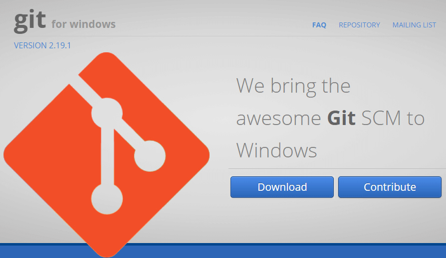
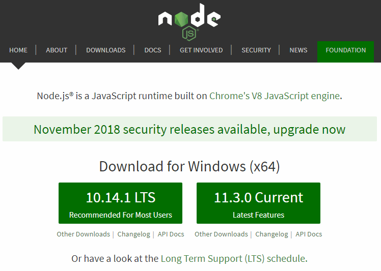
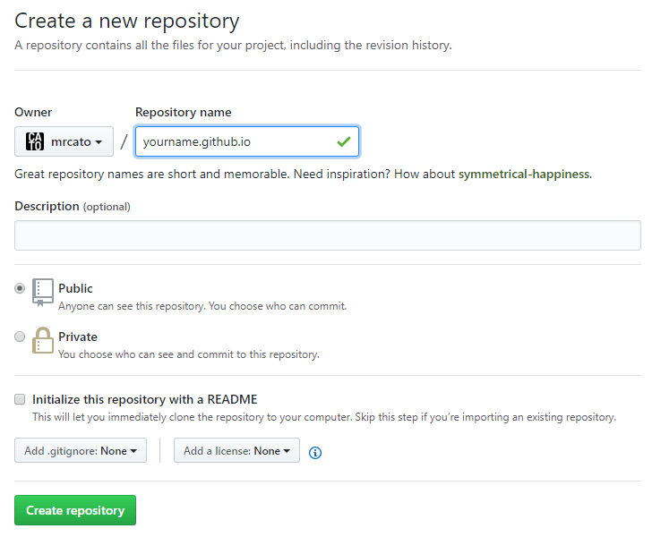

用 Hexo+GitHub 免费搭建个人博客小白教程2019
准备：
我们需要安装Git、Node.js、Hexo以及注册一个GitHub账号。
下载安装Git

下载安装Node.js

注册github
打开Github, 点击signup
-username 用小写；
-邮箱用真实邮箱；
创建Repository
Repository 名字应该是http://username.github.io

配置SSH
程序菜单栏找到并打开 Git Bash ，执行下面的命令生成 SSH 访问私钥及公钥。
1 | $ ssh-keygen -t rsa -C "你的@github注册邮箱地址.com" |
然后一直回车，然后你的 ~/.ssh 文件下就会生成两个文件 id_rsa 和 id_rsa.pub 。
打开你的 Github -> setting -> SSH Keys 。然后点击 New SSH Key 创建一个新的SSH Key。Title 可以用你的计算机名，可以用以区分。将文件 id_rsa.pub 中的所以内容复制粘贴到 Key 下面。然后使用下面的命令测试是否可以连接上 Github 。
1 | $ ssh -T git@github.com |
安装Hexo
上面两个工具安装完整之后，打开 Git Bash ，只需要使用npm即可完成Hexo的安装。
1 | $ npm install -g hexo-cli |
安装Hexo完成之后，执行下面的命令，Hexo将会在你制定的文件夹中新建所需要的文件。
1 | $ hexo init <folder> |
新建完成后，文件夹下的目录如下：
1 | . |
- _config.yml 文件是网站的配置文件，可以在其中配置网站的大部分参数。
- package.json 文件是应用程序的信息。
- source 是资源文件夹，是用来存放用户资源的地方。
- themes 是主题文件夹，Hexo会根据主题来生成不同的静态页面。
- scaffolds是模板件夹，当新建文章的时候，Hexo会根据模板来建立文件。
修改主题
1 | $ git clone git@github.com:dongyuanxin/theme-bmw.git themes/bmw |
修改HEXO配置文件
修改hexo的配置文件：your-blog/_config.yml:1
2
3
4
5
6
7
8
9
10
11
12
13
14
15
16
17
18# ...
# 位置：大概位于 6 ～ 12 行
title: 您自己的网站标题
subtitle: # 不需要填写
description: 您自己的网站描述
keywords: 您自己的网站关键词
author: 您的姓名
language: zh-Hans # 目前仅支持中文
timezone: # 不需要填写
# 位置：大概位于 18 行
permalink: passages/:title/ # 如果您需要开启评论和文章统计，请修改此配置
# 位置：大概位于 76 行
theme: bmw # 启用 "bmw" 主题
# ...
修改主题配置文件
theme-bmw 的配置文件：your-blog/themes/bmw/_config.yml
请注意，初始阶段您并不需要修改本主题的配置文件，请继续往下看。
启动博客
1 | $ hexo s |
hexo默认监听4000端口, 此时, 请使用Chrome等主流浏览器打开 http://localhost:4000/ ，查看博客。
BMW 主题定制
更多页面
BMW 主题在HEXO默认界面的基础上，额外提供了标签归档、 分类归档、 关于介绍 和 友链界面。如果您想自定义更多页面，请看“进阶内容”。
标签页面
生成标签页面：1
$ hexo new page tags
修改标签归档页面的markdown文件(文件路径：your-blog/source/tags/index.md)的内容：1
2
3
4
5
6
7---
title: tags
date: <!-- 自动生成，无需修改 -->
type: "tags"
categories:
tags:
---
查看标签归档页面：浏览器中打开 http://localhost:4000/tags/
分类页面
生成分类页面：1
$ hexo new page categories
修改分类归档页面的markdown文件(文件路径：your-blog/source/categories/index.md)的内容：1
2
3
4
5
6
7---
title: categories
date: <!-- 自动生成，无需修改 -->
type: "categories"
categories:
tags:
---
查看标签归档页面：浏览器中打开 http://localhost:4000/categories/
关于页面
生成分类页面：1
$ hexo new page about
修改关于页面的markdown文件(文件路径：your-blog/source/about/index.md)的内容：1
2
3
4
5
6
7
8
9
10
11---
title: about
date: <!-- 自动生成，无需修改 -->
type: "about"
categories:
tags:
---
这里编写您的网站/博客的相关介绍：联系方式、更新日志、甚至是您的个人简历。
BMW 主题会自动渲染此篇markdown，并且在 `http://localhost:4000/about/` 展示给您！
查看关于页面：浏览器中打开 http://localhost:4000/about/
友链界面
友链界面除了要编写相关markdown文件，还需要更改 BMW主题的配置文件，以更好地方式展示您的友链！
生成友链界面
1 | $ hexo new page friends |
修改友链页面的markdown文件(文件路径：your-blog/source/friends/index.md)的内容：1
2
3
4
5
6
7
8
9
10
11---
title: friends
date: <!-- 自动生成，无需修改 -->
type: "friends"
categories:
tags:
---
这里编写您的友链声明，您可以陈述您的友链申请规则。
BMW 主题会自动渲染此篇markdown，并且在 `http://localhost:4000/friends/` 展示给您！
展示更多友链
请打开 BMW主题 的配置文件：your-blog/themes/bmw/_config.yml。您会发现在大概46行 左右，有相关友情链接的配置：1
2
3
4
5
6
7
8
9
10
11
12
13
14
15# ...
# 友链详细信息
friends: # 这是一个数组, 每个元素是一个obj对象
-
nickname: 友链名称
avatar: 友链头像
site: 友链地址
meta: 友链信息
-
nickname: 友链名称2
avatar: 友链头像2
site: 友链地址2
meta: 友链信息2
# ...
查看友链页面：浏览器中打开 http://localhost:4000/friends/
进阶内容
theme-bmw的评论系统采用的是Valine，并且提供了基于Leancloud的文章统计插件。您只需要按照以下步骤进行简单的配置，便可以提供更好的用户体验！
如果您不想开启评论系统和文章统计插件，请跳过这一部分
配置Leancloud
点击注册leancloud.cn
注册账户，并且登录您的账户，然后在右上角进入“控制台”。并且创建一个新应用。
配置默认即可（如下图所示），名字根据自己喜好取：
进入刚刚创建的应用，在左上方屏幕，点击创建新Class。接下来，我们就要为评论系统和文章统计插件分别创建2个应用。
为评论系统开通Class: 名称必须是Comment, ACL权限选择“限制写入”，如下图
为文章统计插件开通Class: 名称必须是Timer, ACL权限选择“无限制”，如下图
配置密钥
进入左边导航栏 -> 设置 -> 应用Key：
注意：请保存好您的密钥，关于安全问题，请阅读最后一部分！！！
Now，切回BMW主题的配置文件your-blog/source/friends/index.md。在大概 39~43行，有一项关于leancloud的配置，按照上图中的appId和appKey，复制并且粘贴到配置项即可。
请先确保您按照前面步骤配置了leancloud，并且正确修改了配置文件中的相关配置。
进入配置文件，在大概42行左右，请将leancloud.comment修改为true.
重启hexo服务即可生效。
开启文章统计
请先确保您按照前面步骤配置了leancloud，并且正确修改了配置文件中的相关配置。
进入配置文件，在大概43行左右，请将leancloud.timer修改为true.
重启hexo服务即可生效。
⚠️警告⚠️
4.1 尊重原创
- 您可以根据个人需要修改页面底部的说明信息，但请不要去除
theme-bmw主题的版权声明 - 评论系统采用了
Valine，请不要去除Valine的版权声明 - 尊重原创，也祝您在开源社区玩得开心(^▽^)
4.2 文章格式
BMW主题针对文章的SEO做了相关优化，并且支持摘要内容渲染。如果您想让您的博客SEO更高，浏览体验更高，那么请注意文章格式。
下面是一个标准的文章格式：1
2
3
4
5
6
7
8
9
10
11
12
13
14
15---
title: 文章标题
date: 文章创建日期
categories: 文章分类
tags:
- 文章标签1
- 文章标签2
- ...
---
在`<!-- more -->`之前编写文章的摘要内容！！！
<!-- more -->
在`<!-- more -->`之后编写文章的正式内容！！！
Web安全问题
如果您开启了评论系统和文章统计插件，请仔细阅读此节！
借助了Leancloud规避了后端部署，傻瓜式一键启动相关功能。但随之而来的是，暴露在浏览器环境下的appid和appkey带来的安全问题。
请进入leancloud中您的应用 => 左侧导航栏 => 设置 => 安全中心，进行相关配置：
首先，关闭不需要的“服务开关” (仅保留“数据存储”服务)：
最后，设置您的“Web”安全域名 (就是您的博客/个人网站地址):
本文作者 : Mr.Cato
原文链接 : http://codepress.co/passages/simple-blog-with-hexo-github/
版权声明 : 本博客所有文章除特别声明外，均采用 CC BY-NC-SA 4.0 许可协议。转载请注明出处！
知识 & 情怀 | 二者兼得